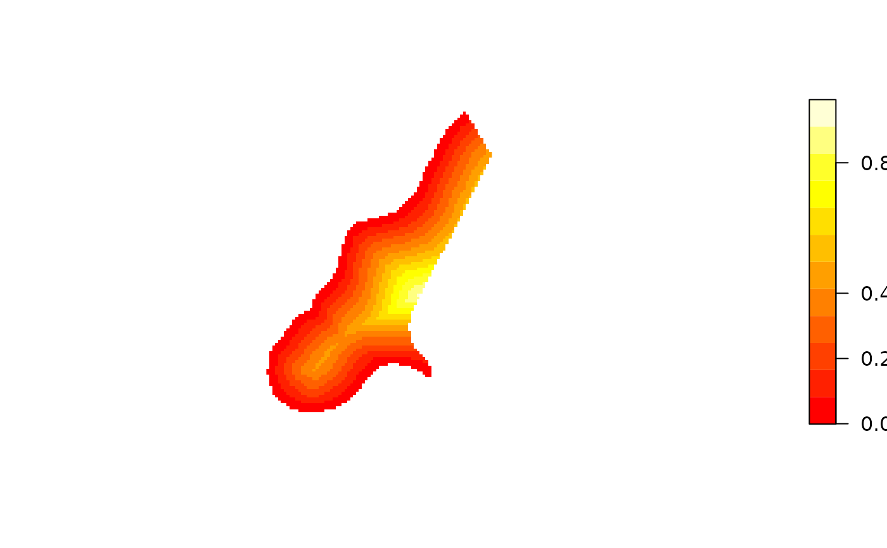
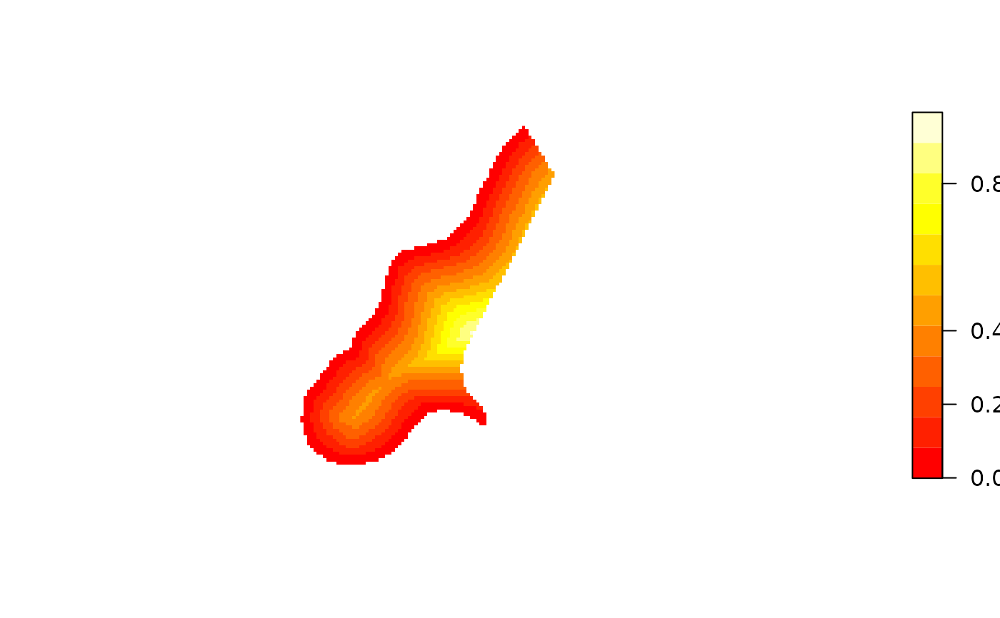

Image or contour method for gridded spatial data; convert to and from image data structure
image.RdCreate image for gridded data in SpatialGridDataFrame or SpatialPixelsDataFrame objects.
# S3 method for SpatialGridDataFrame
image(x, attr = 1, xcol = 1, ycol = 2,
col = heat.colors(12), red=NULL, green=NULL, blue=NULL,
axes = FALSE, xlim = NULL,
ylim = NULL, add = FALSE, ..., asp = NA, setParUsrBB=FALSE,
interpolate = FALSE, angle = 0,
useRasterImage = !(.Platform$GUI[1] == "Rgui" &&
getIdentification() == "R Console") && missing(breaks), breaks,
zlim = range(as.numeric(x[[attr]])[is.finite(x[[attr]])]))
# S3 method for SpatialPixelsDataFrame
image(x, ...)
# S3 method for SpatialPixels
image(x, ...)
# S3 method for SpatialGridDataFrame
contour(x, attr = 1, xcol = 1, ycol = 2,
col = 1, add = FALSE, xlim = NULL, ylim = NULL, axes = FALSE,
..., setParUsrBB = FALSE)
# S3 method for SpatialPixelsDataFrame
contour(x, ...)
as.image.SpatialGridDataFrame(x, xcol = 1, ycol = 2, attr = 1)
image2Grid(im, p4 = as.character(NA), digits=10)Arguments
- x
object of class SpatialGridDataFrame
- attr
column of attribute variable; this may be the column name in the data.frame of
data(as.data.frame(data)), or a column number- xcol
column number of x-coordinate, in the coordinate matrix
- ycol
column number of y-coordinate, in the coordinate matrix
- col
a vector of colors
- red,green,blue
columns names or numbers given instead of the
attrargument when the data represent an image encoded in three colour bands on the 0-255 integer scale; all three columns must be given in this case, and the attribute values will be constructed using functionrgb
- axes
logical; should coordinate axes be drawn?
- xlim
x-axis limits
- ylim
y-axis limits
- zlim
data limits for plotting the (raster, attribute) values
- add
logical; if FALSE, the image is added to the plot layout setup by
plot(as(x, "Spatial"),axes=axes,xlim=xlim,ylim=ylim,asp=asp)which sets up axes and plotting region; if TRUE, the image is added to the existing plot.- ...
arguments passed to image, see examples
- asp
aspect ratio to be used for plot
- setParUsrBB
default FALSE, see
Spatial-classfor further details- useRasterImage
if TRUE, use
rasterImageto render the image if available; for legacy rendering set FALSE; should be FALSE on Windows SDI installations- breaks
class breaks for coloured values
- interpolate
default FALSE, a logical vector (or scalar) indicating whether to apply linear interpolation to the image when drawing, see
rasterImage- angle
default 0, angle of rotation (in degrees, anti-clockwise from positive x-axis, about the bottom-left corner), see
rasterImage- im
list with components named x, y, and z, as used for
image- p4
CRS object, proj4 string
- digits
default 10, number of significant digits to use for checking equal row/column spacing
Value
as.image.SpatialGridDataFrame returns the list with
elements x and y, containing the coordinates of the cell
centres of a matrix z, containing the attribute values in matrix
form as needed by image.
Note
Providing xcol and ycol attributes seems obsolete,
and it is for 2D data, but it may provide opportunities for plotting
certain slices in 3D data. I haven't given this much thought yet.
filled.contour seems to misinterpret the coordinate values, if we take the image.default manual page as the reference.
See also
image.default, SpatialGridDataFrame-class,
levelplot in package lattice. Function
image.plot in package fields can be used to make a legend for an
image, see an example in https://stat.ethz.ch/pipermail/r-sig-geo/2007-June/002143.html
Examples
data(meuse.grid)
coordinates(meuse.grid) = c("x", "y") # promote to SpatialPointsDataFrame
gridded(meuse.grid) = TRUE # promote to SpatialGridDataFrame
data(meuse)
coordinates(meuse) = c("x", "y")
image(meuse.grid["dist"], main = "Distance to river Meuse")
points(coordinates(meuse), pch = "+")
image(meuse.grid["dist"], main = "Distance to river Meuse",
useRasterImage=TRUE)
points(coordinates(meuse), pch = "+")
 # color scale:
layout(cbind(1,2), c(4,1),1)
image(meuse.grid["dist"])
imageScale(meuse.grid$dist, axis.pos=4, add.axis=FALSE)
axis(4,at=c(0,.2,.4,.8), las=2)

data(Rlogo)
d = dim(Rlogo)
cellsize = abs(c(gt[2],gt[6]))
cells.dim = c(d[1], d[2]) # c(d[2],d[1])
cellcentre.offset = c(x = gt[1] + 0.5 * cellsize[1], y = gt[4] - (d[2] - 0.5) * abs(cellsize[2]))
grid = GridTopology(cellcentre.offset, cellsize, cells.dim)
df = as.vector(Rlogo[,,1])
for (band in 2:d[3]) df = cbind(df, as.vector(Rlogo[,,band]))
df = as.data.frame(df)
names(df) = paste("band", 1:d[3], sep="")
Rlogo <- SpatialGridDataFrame(grid = grid, data = df)
summary(Rlogo)
#> Object of class SpatialGridDataFrame
#> Coordinates:
#> min max
#> x 0 101
#> y -77 0
#> Is projected: NA
#> proj4string : [NA]
#> Grid attributes:
#> cellcentre.offset cellsize cells.dim
#> x 0.5 1 101
#> y -76.5 1 77
#> Data attributes:
#> band1 band2 band3
#> Min. : 0.0 Min. : 0.0 Min. : 0.0
#> 1st Qu.:131.0 1st Qu.:138.0 1st Qu.:151.0
#> Median :196.0 Median :199.0 Median :215.0
#> Mean :182.3 Mean :185.4 Mean :192.8
#> 3rd Qu.:254.0 3rd Qu.:255.0 3rd Qu.:254.0
#> Max. :255.0 Max. :255.0 Max. :255.0
image(Rlogo, red="band1", green="band2", blue="band3")
image(Rlogo, red="band1", green="band2", blue="band3",
useRasterImage=FALSE)
is.na(Rlogo$band1) <- Rlogo$band1 == 255
is.na(Rlogo$band2) <- Rlogo$band2 == 255
is.na(Rlogo$band3) <- Rlogo$band3 == 255
Rlogo$i7 <- 7
image(Rlogo, "i7")
image(Rlogo, red="band1", green="band2", blue="band3", add=TRUE)
# color scale:
layout(cbind(1,2), c(4,1),1)
image(meuse.grid["dist"])
imageScale(meuse.grid$dist, axis.pos=4, add.axis=FALSE)
axis(4,at=c(0,.2,.4,.8), las=2)

data(Rlogo)
d = dim(Rlogo)
cellsize = abs(c(gt[2],gt[6]))
cells.dim = c(d[1], d[2]) # c(d[2],d[1])
cellcentre.offset = c(x = gt[1] + 0.5 * cellsize[1], y = gt[4] - (d[2] - 0.5) * abs(cellsize[2]))
grid = GridTopology(cellcentre.offset, cellsize, cells.dim)
df = as.vector(Rlogo[,,1])
for (band in 2:d[3]) df = cbind(df, as.vector(Rlogo[,,band]))
df = as.data.frame(df)
names(df) = paste("band", 1:d[3], sep="")
Rlogo <- SpatialGridDataFrame(grid = grid, data = df)
summary(Rlogo)
#> Object of class SpatialGridDataFrame
#> Coordinates:
#> min max
#> x 0 101
#> y -77 0
#> Is projected: NA
#> proj4string : [NA]
#> Grid attributes:
#> cellcentre.offset cellsize cells.dim
#> x 0.5 1 101
#> y -76.5 1 77
#> Data attributes:
#> band1 band2 band3
#> Min. : 0.0 Min. : 0.0 Min. : 0.0
#> 1st Qu.:131.0 1st Qu.:138.0 1st Qu.:151.0
#> Median :196.0 Median :199.0 Median :215.0
#> Mean :182.3 Mean :185.4 Mean :192.8
#> 3rd Qu.:254.0 3rd Qu.:255.0 3rd Qu.:254.0
#> Max. :255.0 Max. :255.0 Max. :255.0
image(Rlogo, red="band1", green="band2", blue="band3")
image(Rlogo, red="band1", green="band2", blue="band3",
useRasterImage=FALSE)
is.na(Rlogo$band1) <- Rlogo$band1 == 255
is.na(Rlogo$band2) <- Rlogo$band2 == 255
is.na(Rlogo$band3) <- Rlogo$band3 == 255
Rlogo$i7 <- 7
image(Rlogo, "i7")
image(Rlogo, red="band1", green="band2", blue="band3", add=TRUE)